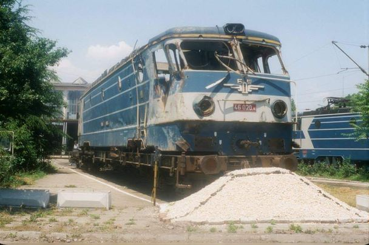
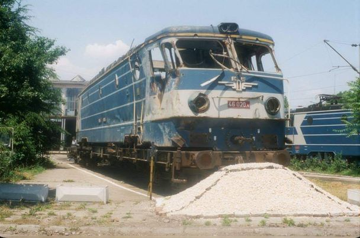

Инциденти с 46 серия:
| Инцидент | Машина/Дата | снимки |
|---|---|---|
| 46 020.4 начело на БВ 8602(сега) се блъска в маневрен състав преминал на затворен(червен) сигнал на гара Казичене. Загиват 8 души и са ранени 51. | 46 020.4/22:35ч. 17 август 1992г. |    |
| При изпитания на първия локомотив от серията за България 46 001.4 в близост до Букурещ се врязва със 130км/ч в румънски локомотив от същия вид който се движи със 60км/ч. Така общата скорост на удара е 190км/ч и загиват двамата български машинисти и четирима специалисти от CFR(румънските държавни железници). | 46 001.4/14 април 1986г. | няма |